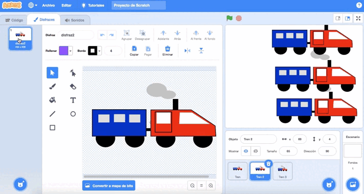
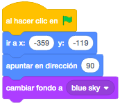
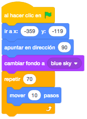
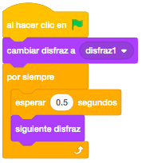
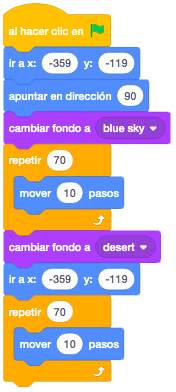
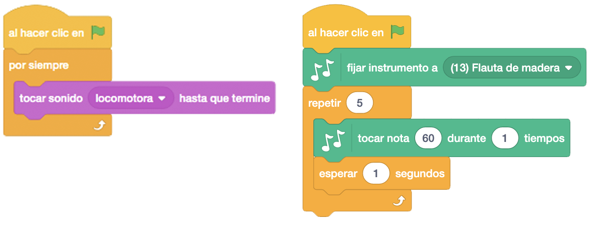
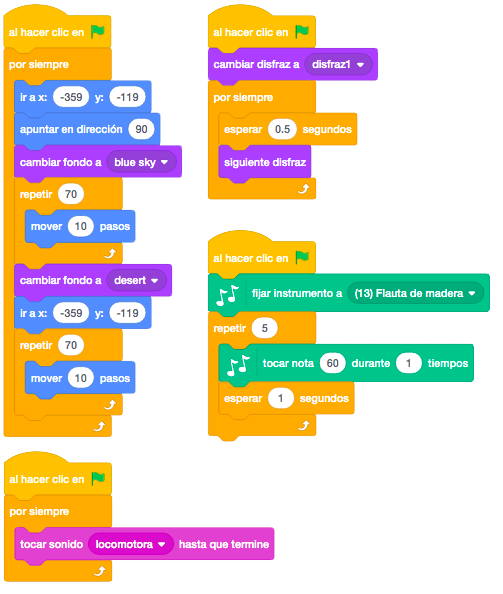

Será el personaje que se moverá cambiando de disfraces y cambiando de escenario.
Habrá como mínimo dos escenarios y los cogeremos del repositorio de Scratch.
Para descargar los objetos necesarios para el juego, lo haremos desde este link. Es un archivo comprimido con 3 objetos y un sonido. Lo descargaremos y lo descomprimimos en el directorio del alumno.
El juego consiste en hacer que nuestro tren viaje por distintos escenarios.
El tren siempre apunta hacia la derecha y se tiene que mover desde la izquierda a la derecha.
Cuando llegue a la derecha de la pantalla, el tren debe volver a comenzar desde la izquierda y el fondo
cambiará al siguiente.
El tren deberá cambiar entre los disfraces para simular que sale humo de la locomotora.
Tendrá que ir pegado al suelo.
Por último, pero no menos importante, debemos incluir sonidos al tren para darle más vida.
Primero borraremos el objeto del gato y añadiremos los tres objetos descargados del tren.
El primero será nuestro objeto definitivo y le añadiremos el disfraz del segundo objeto y del tercero,
quedando el primer objeto con los tres disfraces distintos.

Una vez hecho esto, borraremos los objetos que se han quedado con un solo disfraz y añadiremos un par de
escenarios por donde marchará nuestro tren.
Posicionaremos el tren en la parte inferior izquierda apuntando hacia la derecha y pondremos el fondo que
queramos que aparezca en primer lugar.

Se moverá el tren hacia la derecha mediante "Mover Pasos" de 10 en 10 y dentro de un bucle con las suficientes repeticiones como para que llegue al final de la pantalla.

Por otro lado, cambiaremos de disfraz, pero lo haremos en otro bloque ya que al poner un esperar podría afectar al movimiento del tren.

Cuando el tren esté en la parte de la izquierda y casi no se vea, cambiaremos el escenario y volveremos a posicionar el tren en la izquierda, en la posición inicial. Volveremos a mover el tren hacia la derecha de la misma forma que con el anterior escenario

Añadiremos el sonido de la locomotora que previamente descargamos como "locomotora.wav.
También crearemos un sonido con la flauta que simule el silbato del tren. Podemos añadir cualquiera de los
dos o incluso los dos juntos para darle mayor realismo.

Para que nuestro programa esté continuamente funcionando, podemos poner un bloque "Por Siempre" que englobe todo el código para que el tren esté en continuo movimiento.
Con todos los cambios, quedará de la siguiente manera.

Y el juego quedaría así.
Ahora podemos añadirle todos los fondos que queramos para que el tren no pare de viajar. Podemos cambiar el
cambio de escenario de uno en concreto por "Siguiente Fondo".
Para ver el juego terminado pulsa
aquí.
Para descargarte el juego terminado pulsa
aquí.